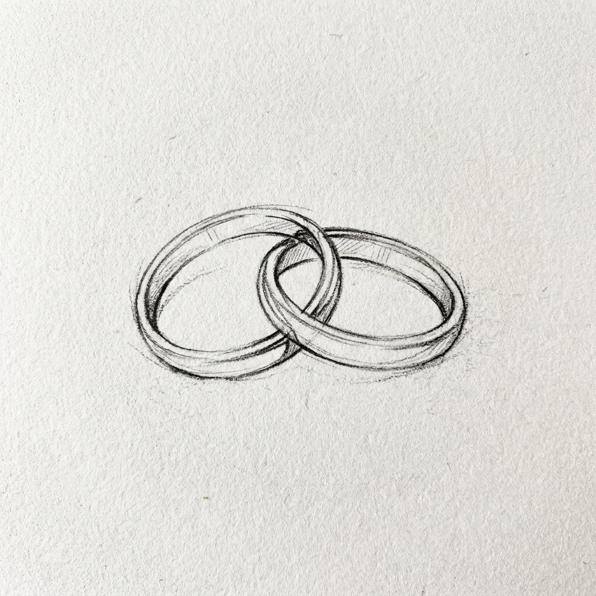

@onfr0y & @nanny
รักแนนนี่ที่สุดนะ*
je suis amoureux
"Soyons heureux
ensemble."
ensemble."

"Je jure de toujours
t'aimer de toutes
les manières possibles."
t'aimer de toutes
les manières possibles."
00
DAYS
:
00
HOURS
:
00
MINUTES
:
00
SECONDS